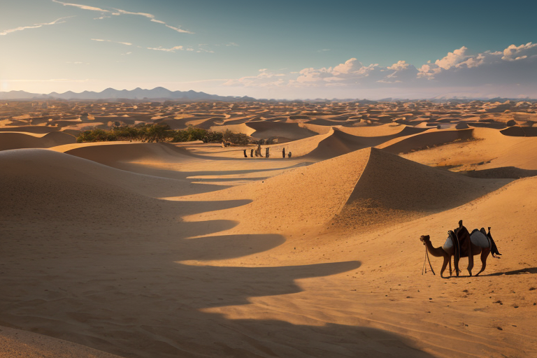
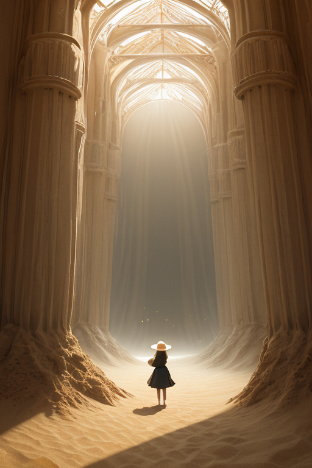
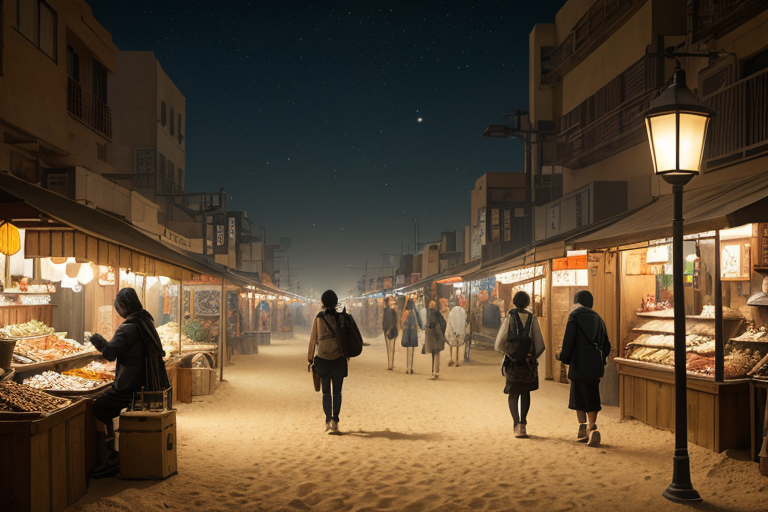
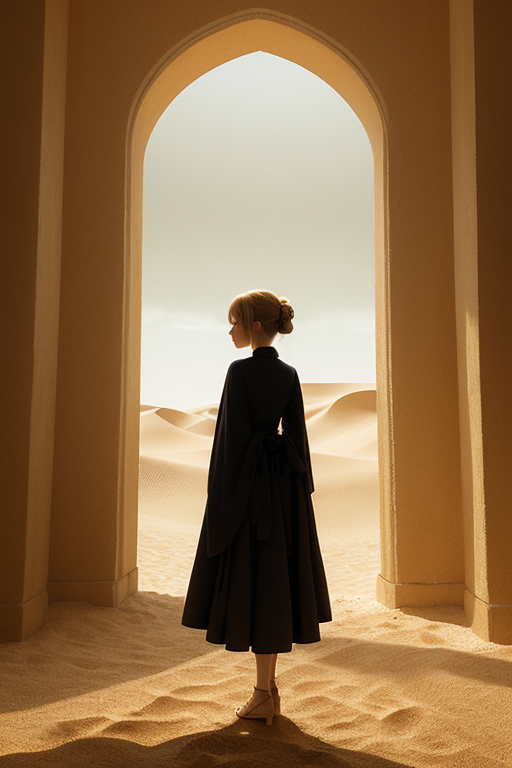
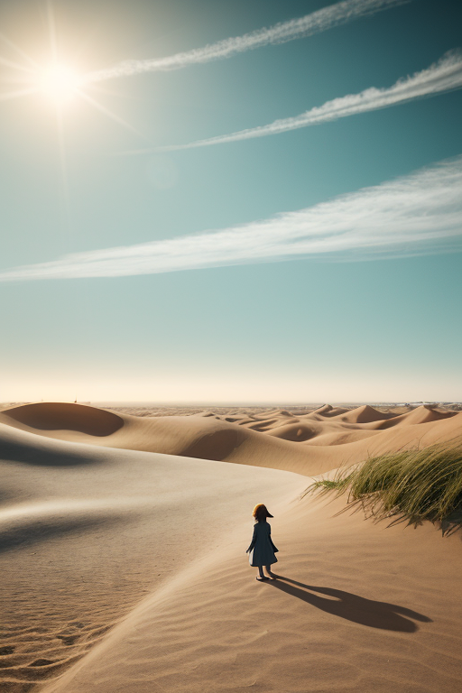

第一章 現実の鳥取
あなたはまだ気づいていない。この土地にも、王がいることを。
鳥取砂丘の観光客のざわめきは、一種の市場のようだった。砂丘レンタル屋の呼び込み、らくだの背に乗る笑い声、砂の美術館前で記念写真を撮る家族。その活気の奥で、松葉がにを並べる港町の競りや、二十世紀梨を箱詰めする選果場の音が、かすかに重なっている。金と人の流れは、この土地の命脈だ。
そのざわめきの只中、砂色のコートを纏った一人の男が立っていた。トットリア・デザート、孤砂王である。彼の目には、賑わいの下を流れる「歪み」の細流が見えている。観光客の増加が引き起こす水脈の微妙な圧迫、開発の熱が砂丘の乾燥波を僅かに亢進させる予兆。彼は感情を持たないはずの調整者だ。ただ、この喧噪の中に立つ時、なぜか「無駄」という言葉が思考を掠める。笑顔も呼び声も、全てがこの土地を維持するための、必要な「何か」なのだろうか。
彼はそっと手のひらを上げた。掌から微かな砂の粒子が漂い、見えない歪みへと吸い込まれていく。大きな災害は防げない。ただ、今日の乾燥した風が、観光客の目の前で砂煙を舞い上げることを、ほんの少し遅らせるだけだ。

第二章 歪みの兆候
砂の美術館の巨大な彫刻は、今年は「オアシス」をテーマにしていた。観光客のざわめきが館内に満ち、記念撮影の笑い声が反響する。その中心で、トットリアはただ立っていた。人流データは平年を上回る。消費額も微増している。全ては計画通り、この砂商圏の「活気」を示す数字だ。
しかし、彼の目には別のものが映っていた。砂の粒子が、彫刻の細部からほんの少し、計算より早く剥離している。大山からの清冽な水の流れが、ごくわずかに澱んでいる。二十世紀梨の出荷を待つ農家の会話に、去年にはなかった焦りの粒が混じる。これらは統計には現れない、土地の「息」の乱れだ。
彼は掌をかざした。妖精デザリアが呼び起こす微風が、彫刻から剥がれ落ちようとする砂粒を、ほんの一瞬、元の位置に留めた。修復ではない。ほんの少しの「遅延」だ。観光客の誰も気付かぬうちに、彫刻の寿命は一秒だけ延びた。
孤独は敵か味方か。この問いは、彼の中でまだ形にならない。ただ、この喧噪の中にあって、誰よりも早く、誰にも気付かれない歪みにだけ気付けるこの感覚。それは、確かに彼だけのものだった。

第三章 王の葛藤
砂の美術館を出た彼は、砂丘の麓に広がる夜の商圏へと足を向けた。観光客で賑わう飲食店の明かり、土産物を探す人々の熱気。そこには、砂丘の静寂とは対極の、人の欲望が渦巻いていた。松葉がにを豪勢に並べた店先では、笑顔の裏に値段への計算が光る。二十世紀梨のジュースを片手に、次のスポットを急ぐ足音。全てが「消費」という名の流れに組み込まれている。
デザリアが微かに震えた。この欲望の熱量そのものが、土地に微かな乾燥の歪みを生み出していた。過剰な照明、排水、そして何より「もっと、もっと」という無意識の念が、砂丘の微妙な水分バランスを脅かす。彼は指をわずかに動かした。妖精サキュリアが、店舗から立ち上る排熱の一部を、目に見えぬ砂のフィルターで濾過する。削ぎ落とす。無駄を、ほんの少し。
守るべきは、この砂丘の孤高なバランスなのか。それとも、この活気そのものなのか。彼は人混みの片隅に立ち、誰にも触れられず、ただ調整を続けた。孤独は、この葛藤から彼を切り離し、ただ任務を遂行させる。味方なのか。それとも、敵なのか。答えは、砂のように掌からすり抜けていく。

第四章 妖精との対話
砂の美術館の、巨大な砂像の影。デザリアは、削ぎ落とした熱の残滓を掌で弄びながら言った。
「商いとは、砂の流れです。金も、物も、人も。全てが、ここに集まり、そして去る。砂丘と同じ形を成しています」
その声は、乾いた風のようだった。
「王よ。あなたはその流れを、歪みなく保とうとする。しかし、人の欲望そのものが歪みの種です。彼らは集まり、触れ合い、傷つけ合い、そして離れる。その全てが、熱を生む」
孤砂王は、美術館の窓越しに、砂像を仰ぎ見る観光客の群れを見つめた。彼らの会話、笑い声、ため息。全てが、微かな振動として地中に伝わる。
「孤独は、あなたをその熱から隔てる。故に、調整は可能となる」
デザリアは掌をひるがえし、砂を零した。
「しかし隔てられた者は、流れの温もりも、その危うさも、直には知り得ません。味方か敵か。それは、あなたがどちらを選ぶかではなく、どちらを引き受けるかです」
砂は、彼女の足元で、小さな渦を巻いて静まった。

第五章 微調整と余韻
砂の美術館の巨大な彫刻の影で、トットリアは目を閉じた。観光客の足音、カメラのシャッター音、砂丘を渡る風。それら全てが、彼女の内側で「流れ」として再構築される。デザリアの言葉が、彼女の直線的な思考に、かすかな歪みを生んでいた。
彼女は指を微かに震わせた。砂丘を歩く老夫婦の一人が、ほんの少し足を滑らせた。隣にいた見知らぬ若者が、反射的に腕を差し伸べる。その一瞬の接触が、二人の間に、言葉にならない安堵の流れを生む。浦富海岸の岩場では、好奇心から危険な場所に近づこうとした子供の足元の小石が、ごく自然に転がる。子供は躓き、ほんの一歩、後退する。大山から流れ下る清冽な水は、三朝温泉の源泉へと向かうその途上、ごく僅かにその流量を調整され、明日の「とうふちくわ」を仕込む職人の釜の火を、かすかに弱める。誰も気付かない。ただ、偶然が、ほんの少しだけ優しくなる。
彼女は、砂丘の頂に立ち、吹きすさぶ風に身を任せた。孤独は、彼女を流れから隔てる。しかし隔てられたからこそ、流れそのものを、歪みなく見つめ、ほんの少し手を加えることができた。味方でも敵でもない。それは、ただ、彼女が存在するための、確かな「間」だった。
あなたの町にも、王がいる。